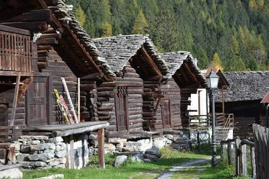
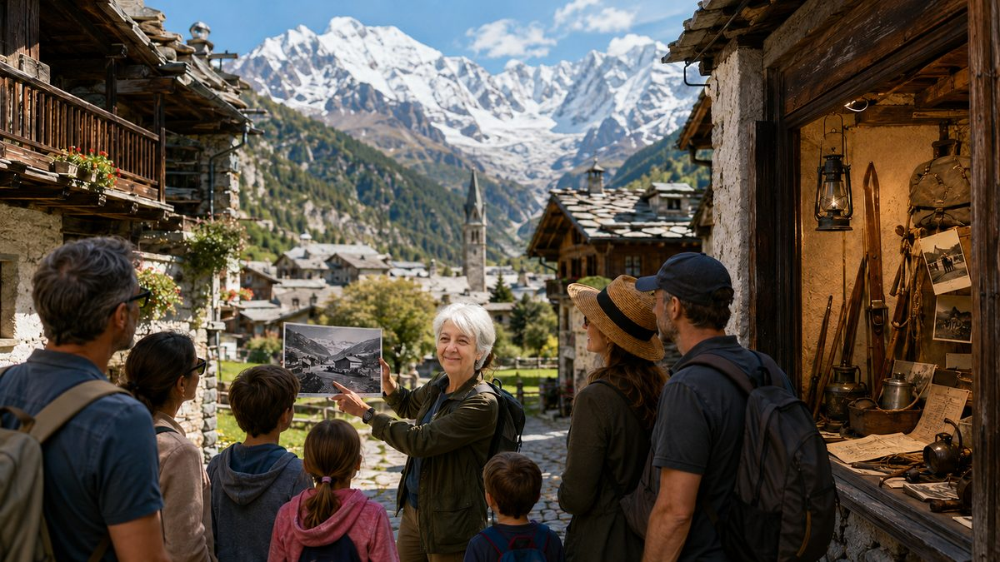

Ein wunderschönes Dorf am Fuße des Monte Rosa
Unter den schönsten Alpendörfern (Orange Flag des Touring Club Italiano): alte Häuser, unberührte Landschaft und Naturerlebnisse — ideal für Bergausflüge und Familien.

Alpine Identität
Alte Häuser, unberührte Landschaft
Suchen Sie ein Bergziel nicht zu weit von Mailand, Turin, Varese und Novara, dem Lago Maggiore, den Städten der Po-Ebene und der Schweiz? Ein Dorf, das echte Berge für alle ist, die Natur, Ruhe, Wälder und Wellness lieben?
Macugnaga ist ein Dorf, das seine Seele bewahrt hat: traditionelle Architektur, Bergstille, eine Gemeinschaft aus Geschichte und Gastfreundschaft. Der Monte Rosa thront im Hintergrund, doch es ist ein Berg zum Erleben vom Dorf, den Wegen, Wäldern, Einwohnern und ihrer Geschichte — wegen seiner Natürlichkeit.
Als Wochenende erreichbar von Mailand, Lago Maggiore, Varese, Novara und der Ebene: ideal für die Familie und Berge mit Kindern, ein romantisches Paarwochenende, mit Freunden oder mit Tempo und Aktivitäten auch für Seniorenen.
Wenn Sie in einem Hotel oder Campingplatz am Lago Maggiore, Ortasee oder Mergozzo-See übernachten und einen Bergtag suchen, ist Macugnaga / Monterosa für Wege, Dorf und Panoramen erreichbar: Erlebnisse online buchen.
Für alle
Zugängliche Berge, auch mit Kindern
Auf leichten Wegen — oder für Erfahrene mit Alpinismus auf spezialisierten Portalen — finden Sie hier Angebote für Familienberge, Erwachsene, Jugendliche und Freundesgruppen, die den Berg nah, leicht und sicher erleben wollen.
Diese Website ist für alle: echte Berge, menschlich bemessen. Entdecken Sie die Seiten Familien, Paare, Seniorenen und Wochenende.



Richtung Gipfel
Sessellift und Seilbahn, näher am Rosa
Belvedere, Alpe Burki, Alpe Bill und Passo Moro: mit den Anlagen (wenn in Betrieb) kommen Sie der Ostwand näher — und bleiben im Dorf und seinen Wegen verwurzelt.
Gold und Erinnerung
Ein Tal voller Geschichten
Von der Goldsuche in Pestarena zu den Stollen der Mine: Macugnaga erzählt Jahrhunderte von Arbeit, Mut und Verbundenheit mit dem Berg.
Die Goldmine besuchenFAQ Destination
Häufige Fragen zu Macugnaga
Familien, Paare, Seniorenen, Wanderungen und Wochenenden nahe Mailand und Lago Maggiore: nützliche Antworten vor der Abreise.
Macugnaga è adatta come montagna per famiglie e montagna con i bambini?
Sì: percorsi facili, villaggio accogliente ed esperienze guidate senza alpinismo tecnico. Ideale tra le montagne per famiglie del Monte Rosa. Vedi Familien e le attività del portale di prenotazione.
È una meta in montagna per coppie e gruppi di amici?
Sì: silenzi, panorami sul Monte Rosa e esperienze a contatto con la natura per un weekend romantico o una fuga tra amici. Scopri Paare e Wochenende.
Ist Macugnaga ideal für Seniorenen?
Sì: ritmi soft, sentieri accessibili, benessere nei boschi e visite culturali (Walser-Hausmuseum, Goldmine). Mehr erfahren su Senioren.
Gibt es Wanderungen und Spaziergänge in Macugnaga?
Dal Dorf ai boschi e ai sentieri sotto il Monte Rosa: passeggiate ed escursioni soft da vivere dal paese. Prenota outdoor su Erlebnisse.
È ancora montagna vera, con luoghi caratteristici e antiche baite?
Sì: architettura tradizionale, antiche baite, bel paesaggio e panorami sul Monte Rosa — un villaggio alpino autentico, tra i paesi più belli delle Alpi (Bandiera Arancione del Touring Club Italiano).
È adatta per un weekend sulla montagna vera, vicina a Milano, Novara, Varese e città della pianura?
Sì: circa 2 h da Milano e 1,5 h da Novara e Varese; anche Lago Maggiore, Torino, Pianura Padana e Svizzera. Vedi Wochenende e Stadtflucht.